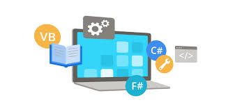
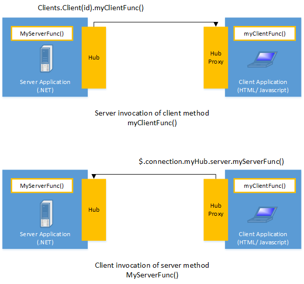
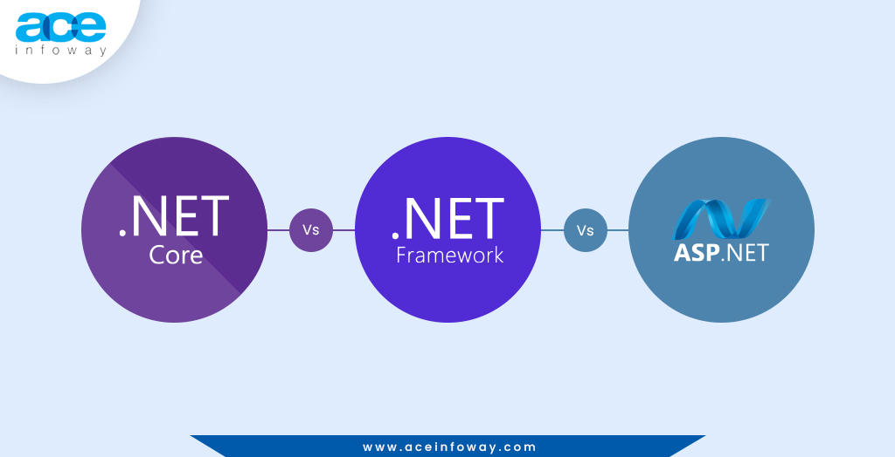
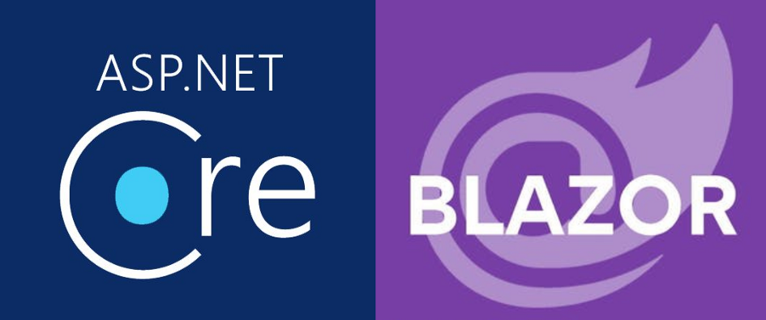

PARCIAL 2 - Tecnologias para Desarrollo de Aplicaciones Web en ASP.NET
¿Qué son las Aplicaciones Web ASP.NET?
Las aplicaciones web ASP.NET son aquellas que siguen el modelo de
desarrollo tradicional basado en servidores web, utilizan tecnologías como
ASP.NET Web Forms o ASP.NET MVC para crear páginas web dinámicas
que se generan en el servidor y se envían al cliente.
Este enfoque facilita la creación de aplicaciones web complejas con una
estructura de páginas más tradicional y controlada por el servidor.

¿Qué es un Web Forms?
ASP.NET Web Forms forma parte del marco de aplicaciones web ASP.NET y se incluye con Visual Studio. Es uno de los cuatro modelos de programación que puede usar para crear aplicaciones web ASP.NET, los demás son ASP.NET MVC, ASP.NET Web Pages y ASP.NET Single Page Applications.
Los formularios Web Forms son páginas que los usuarios solicitan mediante su explorador. Estas páginas se pueden escribir con una combinación de HTML, script de cliente, controles de servidor y código de servidor. Cuando los usuarios solicitan una página, el marco se compila y ejecuta en el servidor y luego el marco genera el marcado HTML que el explorador puede representar. Una página de ASP.NET Web Forms presenta información al usuario en cualquier dispositivo cliente o explorador.
Con Visual Studio, puede crear aplicaciones ASP.NET Web Forms. El entorno de desarrollo integrado (IDE) de Visual Studio le permite arrastrar y colocar controles de servidor para diseñar la página de Web Forms. A continuación, puede establecer fácilmente propiedades, métodos y eventos para los controles de la página o para la propia página. Estas propiedades, métodos y eventos se usan para definir el comportamiento, la apariencia y el funcionamiento de la página web, etc. Para escribir código de servidor y controlar la lógica de la página, puede usar un lenguaje .NET como Visual Basic o C#.
Ventajas de Web Forms
Controles de servidor:Los controles de servidor web de ASP.NET son objetos en páginas web de ASP.NET que se ejecutan cuando se solicita la página y que representan el marcado en el explorador. Muchos controles de servidor web son similares a los elementos HTML conocidos, como botones y cuadros de texto. Otros controles incluyen un comportamiento complejo, como controles de calendario y controles que puede usar para conectarse a orígenes de datos y mostrar datos.
Páginas maestras:Las páginas maestras de ASP.NET permiten crear un diseño coherente para las páginas de la aplicación. Una sola página maestro define la apariencia y el comportamiento estándar que desea para todas las páginas (o un grupo de páginas) en su aplicación. Después, puede crear páginas de contenido individuales con el contenido que desee mostrar. Cuando los usuarios solicitan las páginas de contenido, se combinan con la página maestra para generar una salida que combine el diseño de la página maestra con el contenido de la página de contenido.
Trabajar con datos: ASP.NET proporciona muchas opciones para almacenar, recuperar y mostrar datos. En una aplicación ASP.NET Web Forms, se usan controles enlazados a datos para automatizar la presentación o entrada de datos en elementos de la interfaz de usuario de páginas web, como tablas y cuadros de texto y listas desplegables.
¿Qué es Windows Communication Foundation?
Windows Communication Foundation (WCF) es un marco para crear aplicaciones orientadas a servicios. Con WCF, es posible enviar datos como mensajes asincrónicos de un punto de conexión de servicio a otro. Un extremo de servicio puede formar parte de un servicio disponible continuamente hospedado por IIS, o puede ser un servicio hospedado en una aplicación. Un extremo puede ser un cliente de un servicio que solicita datos de un extremo de servicio. Los mensajes pueden ser tan simples como un carácter o una palabra que se envía como XML, o tan complejos como una secuencia de datos binarios. A continuación se indican unos cuantos escenarios de ejemplo:
Un servicio seguro para procesar transacciones comerciales.
Un servicio que proporciona datos actualizados a otras personas, como un informe sobre tráfico u otro servicio de supervisión.
Un servicio de chat que permite a dos personas comunicarse o intercambiar datos en tiempo real.
Una aplicación de panel que sondea los datos de uno o varios servicios y los muestra en una presentación lógica.
Exponer un flujo de trabajo implementado utilizando Windows Workflow Foundation como un servicio WCF.
Si bien era posible crear tales aplicaciones antes de que existiera WCF, con WCF el desarrollo de puntos de conexión resulta más sencillo que nunca. En resumen, WCF se ha diseñado para ofrecer un enfoque manejable para la creación de servicios web y clientes de servicios web.
Video de Windows Communication Foundation
ASP.NET MVC
El patrón arquitectónico de Modelo-Vista-Controlador (MVC) separa una aplicación en tres componentes principales: el modelo, la vista y el controlador. El marco de MVC de ASP.NET proporciona una alternativa al patrón de ASP.NET Web Forms para crear aplicaciones web basadas en MVC. El marco de ASP.NET MVC es un marco de presentación ligero y muy fácil de probar que (como las aplicaciones basadas en Web Forms) se integra con las características de ASP.NET existentes, tales como páginas maestras y la autenticación basada en pertenencia. El marco de MVC se define en el espacio de nombres de System.Web.Mvc y es una parte admitida fundamental del espacio de nombres de System.Web.
MVC es un modelo de diseño estándar muchos desarrolladores conocen. Algunos tipos de aplicaciones web saldrán beneficiadas del marco de MVC. Otros seguirán usando el patrón de aplicaciones tradicional de ASP.NET, que se basa en Web Forms y postbacks. Otros tipos de aplicaciones web combinarán los dos enfoques; ya que uno no excluye al otro.
El marco de MVC incluye los siguientes componentes:
Modelos:Los objetos modelo son las partes de la aplicación que implementan la lógica del dominio de datos de la aplicación. A menudo, los objetos modelo recuperan y almacenan el estado del modelo en una base de datos. Por ejemplo, un objeto Producto podría recuperar información de una base de datos, operar en ella y, después, escribir la información actualizada en una tabla Productos en SQL Server.
Vistas:Las vistas son los componentes que muestra la interfaz de usuario (IU) de la aplicación. Normalmente, esta interfaz de usuario se crea a partir de los datos del modelo. Un ejemplo sería una vista de edición de una tabla Productos que muestra cuadros de texto, listas desplegables y casillas basándose en el estado actual de un objeto Productos.
Controladores:Los controladores son los componentes que controlan la interacción del usuario, trabajan con el modelo y, en último término, seleccionan una vista para representar la interfaz de usuario. En una aplicación de MVC, la vista solo muestra información; el controlador controla y responde a la interacción y los datos que introducen los usuarios. Por ejemplo, el controlador administra los valores de la cadena de consulta y pasa estos valores al modelo, que a su vez los usa para consultar la base de datos.
Ejemplo de ASP.NET Web API - Video
Introducción a SignalR
SignalR de ASP.NET es una biblioteca para los desarrolladores de ASP.NET que simplifica el proceso de agregar funcionalidad web en tiempo real a las aplicaciones. La funcionalidad web en tiempo real es la capacidad de disponer de contenidos de inserción de código de servidor en clientes conectados al instante, a medida que van estando disponibles, en lugar de que el servidor tenga que esperar que un cliente solicite nuevos datos.
Puede utilizarse SignalR para añadir cualquier tipo de funcionalidad web en tiempo real a una aplicación ASP.NET. Se suele poner como ejemplo el chat, pero se puede hacer mucho más. Un usuario es un posible candidato para el uso de SignalR cada vez que actualiza una página web para ver nuevos datos, o cuando la página ejecuta sondeos largos para recuperar nuevos datos. Algunos ejemplos son los paneles y las aplicaciones de supervisión, las aplicaciones colaborativas (p. ej., edición simultánea de documentos), las actualizaciones de progreso del trabajo y los formularios en tiempo real.
SignalR también permite tipos completamente nuevos de aplicaciones web que requieren actualizaciones de alta frecuencia del servidor, como los juegos en tiempo real.
SignalR ofrece una API sencilla para crear llamadas de procedimiento remoto (RPC) de servidor a cliente que llaman a funciones JavaScript en exploradores cliente (y otras plataformas cliente) desde código .NET de servidor. SignalR también incluye API para la administración de conexiones (por ejemplo, eventos de conexión y desconexión) y la agrupación de conexiones.

SignalR controla automáticamente la administración de conexiones y permite difundir mensajes a todos los clientes conectados de forma simultánea, como un salón de chat. También se pueden enviar mensajes a clientes concretos. La conexión entre el cliente y el servidor es persistente, a diferencia de una conexión HTTP clásica, que se vuelve a establecer para cada comunicación.
SignalR admite la función "server push", con la que el código de servidor puede llamar al código de cliente en el explorador mediante llamadas a procedimientos remotos (RPC), en lugar del modelo de solicitud-respuesta habitual en la web en la actualidad.
Las aplicaciones SignalR se pueden escalar horizontalmente a miles de clientes mediante proveedores integrados y de terceros de escalado horizontal.
ASP.NET es un marco de desarrollo web popular para compilar aplicaciones web en la Plataforma .NET, mientras que ASP.NET Core es la versión de código abierto de ASP.NET, que se ejecuta en macOS, Linux y Windows. ASP.NET Core se lanzó por primera vez en 2016 y es un rediseño de las versiones anteriores de ASP.NET solo para Windows.

Ventajas
Rendimiento: El rendimiento es un enfoque clave de ASP.NET Core. Es más rápido que otros marcos web populares en el independiente.
Moderno e Innovador: ASP.NET Core está diseñado para permitir que los componentes en tiempo de ejecución, las API, los compiladores y los lenguajes evolucionen rápidamente, a la vez que proporciona una plataforma estable y compatible para mantener las aplicaciones en ejecución.
Implementación Flexible: El entorno de ejecución de ASP.NET Core en el que se ejecuta la aplicación se puede implementar como parte de la aplicación o instalarse de forma centralizada en el servidor web. ASP.NET Core también es perfectamente adecuado para contenedores de Docker.
Blazor de ASP.NET Core
Blazor es un marco web de front-end de .NET que admite la representación del lado servidor y la interactividad del cliente en un único modelo de programación:
Cree interfaces de usuario interactivas enriquecidas con C#.
Comparta la lógica de aplicación del lado cliente y servidor escrita con .NET.
Represente la interfaz de usuario como HTML y CSS para la compatibilidad con todos los exploradores, incluidos los móviles.
Cree aplicaciones híbridas de escritorio y móviles con .NET y Blazor.

ASP.NET Razor Pages
Razor Pages es un modelo basado en páginas para compilar la interfaz de usuario web representada por el servidor. Razor La interfaz de usuario de páginas se representa dinámicamente en el servidor para generar el HTML y CSS de la página en respuesta a una solicitud del explorador. La página llega al cliente lista para mostrarse. La compatibilidad con Razor Pages se integra en ASP.NET Core MVC.
Razor Ventajas de las páginas:
Compilación y actualización rápida de la interfaz de usuario. El código de la página se mantiene con la página, mientras que se mantienen separados los intereses relativos a la interfaz de usuario y la lógica de negocios.
Se puede probar y se escala a aplicaciones de gran tamaño.
La lógica específica de la vista y los modelos de la vista pueden mantenerse juntos en su propio espacio de nombres y directorio.
Los grupos de páginas relacionadas se pueden mantener en su propio espacio de nombres y directorio.
Jaime Vidales Luis Antonio - 6-A - LITC - Parcial 2 - Desarrollo Web